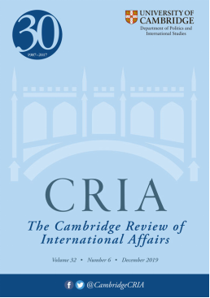

收录于合集 #理论研究 96个

作品简介
【作者】 Nicholas Kitchen（尼古拉斯·基钦），英国萨里大学（the University of Surrey）国际干预研究中心联合主任，国际关系讲师。Michael Cox（迈克尔·考克斯），伦敦政治经济学院国际关系荣休教授和LSE IDEAS（伦敦政治经济学院智库）主任。
【编译】 陈勇（国政学人编译员，北京大学国际关系学院）
【校对】 王川
【审核】 周玫琳
【排版】 高佳美【来源】Nicholas Kitchen & Michael Cox. (2019). Power, structural power, and American decline. Cambridge Review of International Affairs,32 (6),734-752, DOI:10.1080/09557571.2019.160615
期刊介绍

《剑桥国际事务评论》（ Cambridge Review of International Affairs ）于1985年创立，是国际关系同行评审学术期刊，以季刊形式发行。由剑桥大学国际研究中心（现隶属牛津大学政治与国际关系学院）编辑，Routledge组织出版。根据2018学术报告显示，其影响因子为0.656。
权力、结构性权力与美国的衰落
Power, structural power, and American decline
内容提要
在过去的二十年中，围绕美国权力的争论介乎于帝国的赞曲和衰落的挽歌之间。关于权力转移的争论多建立在以相对实力为基础的权力概念之上，然而本文认为这一概念从理论上来说并不能用于分析美国权力的起落。作者主张从“结构性权力（structural power）”的角度探讨权力的转移，认为国际体系的某些特性的发展促使结构性优势在有关国际领导权的问题上比国家实力的均衡更加重要，同时也减弱了系统性变化的影响，降低了国家的相对力量与其在体系结构中所处位置的联系。 文章导读
一、 ** ** 权力的升与落，以及美国衰退论的兴起**** ****
关于美国衰落的评论历史悠久。20世纪50年代，苏联的技术成就曾引发人们对亨利·卢斯（Henry Luce）“美国世纪”的观点的第一波质疑。到了70年代，越南战争和当时的国际政治经济局势促使人们呼吁美国应该“管控”，而不是“阻止”不可避免的衰落。里根“美国晨曦”式的乐观主义也未能长期维持，保罗·肯尼迪的《大国的兴衰》在80年代中后期的经济增长达到顶峰之际畅销一时。肯尼迪在书中运用丰富的量化数据，提出了一个简明的观点：大国崛起，必然衰落，美国也不例外。美国的承诺将会超过其能力（ability）限度，这种债务负担将导致衰落不可避免。然而，90年代的美国似乎证明了肯尼迪的观点是错误的，美国在经济和技术领域的主导地位助其在国际公共领域实现了前所未有的控制，促成了单极稳定的状态。在这不足十年的时段内，美国衰落的叙事被美利坚帝国的说法所取代。仅仅数年过后，美国代价高昂的军事冒险重新唤起了关于帝国过度扩张（可能导致衰落）的警告，也激发了左派对美利坚帝国即将崩溃的庆贺。当金融危机展示出美国经济的脆弱，让大规模国家干预成为必要时，一份长期的分析报告将2020年后的财政状况展望形容为“彻头彻尾的大灾难（downright apocalyptic）”。然而，作者同时指出，如9.11后的战争一样，美国之外的力量为其经济政策的失误提供了不成比例的资金支持。即使是在全球市场信心处于低谷之际，美债市场仍然保持稳健。尽管经济衰退的全球扩展和战争一样影响了美国的声誉，但世界仍然寄希望于美国能在金融危机后稳定全球的经济局势，市场对于实际负利率的美债的追求确证了美国是“默认（default）”的霸权力量。
二、 ** 概念与数据：衡量权力** ****
有关衰落和权力转移的讨论往往在“衰落的含义”等基础问题上产生分歧。以奥巴马关于美国是否衰落的论述为例，作者引用迈克尔·贝克利（Michael Beckley）的观点，指出“大部分关于（美国）衰落的学术讨论并未考察全面的数据指标，而仅是描绘了不精确的权力均衡的图景，通过少数测量指标提供一些趣闻轶事式的信息。”诚然，在关于衰落的学术讨论中有一些对“实力”的详细分析，但其中几乎没有研究涉及对权力具体指标与权力本身的关系的批判性反思（critically self- reflective）。一些针对权力的分析会仔细考察对权力的感知，将其独立于其实力来源进行研究，但这样的做法更倾向于将响应权力的外交政策中的“错误”理论化，而不是探究权力指标本身的可靠性。尽管测量权力的难度显而易见，但与此同时，现实主义者仍继续尝试用量化的方式评估权力均衡。在承认“无法确定哪些资源是测量实际实力的合适标准”以及“名义上的资源数量和实际可用情况的关系难以确定”等困难的前提下，兰德公司的一份报告坚持采用基于资源的权力概念，试图构建一套“最低必要限度（minimally necessary）”的国家权力量化指标体系，而并未尝试解决基础的概念问题。作者认为，这种将权力视为与资源（resource）相关的“资产（property）”的观念体现了在关于“衰落”的讨论中对“权力”概念的误用。基于资源的权力观点旨在避免“行使谬误（exercise fallacy）”——即将权力简单地等同于改变另一个行为体的行为的做法。但这种强调“实力”的路径却很容易陷入“媒介谬误（vehicle fallacy）”——如果把权力看作一种资源，则容易忽视“资源只是权力得以实施的媒介”。为了回避这些问题，彼得·莫里斯（Peter Moriss）提出了对于权力的“特质性”的理解，强调权力不是一种事物（资源或媒介），亦非一类事件（行使权力的行为），而是一种在特定时空背景下，经由一定媒介才能发挥作用的“潜在能力（capacity）”然而，作者认为从“特质”的角度理解权力，将其视为一种“潜在能力”也不能拯救上述基于“资源”概念的权力分析。一方面，这种视角下的分析仍然需要明确地指出能力产生的因果机制。另一方面，在权力转移的讨论中，权力被假定为可以累积的。这种认为不同权力在本质上可以互相替代的路径承认权力具有不同的组成元素，但却忽视了它的多维度特性，也忽略了一些资源的可转换性受限的事实。正是因为权力具有多维度和不可替换的本质，所以不存在对权力相互作用的单一测量标准，国际权力分布状况也不是唯一的。这些问题说明，即便将权力理解为一种“特质”，脱离一定背景（至少是权力关系的范围和领域）的研究也不具有太大意义。因此，一些量化指标虽然并非毫无用处，但不同资源之间具有不可通约性，并且由能力向权力转化的因果机制也不能被简化为一个常量。最后，作者指出了量化指标选择过程中的随意性和主观性。因为缺少能够比较不同能力、确定何种能力更为重要的实证性的权力计算和经过证明的判断标准，所以出现了大量关于美国衰落的讨论，不同观点的持有者也有了充足的空间来提出基于不同数据指标和趋势的分析。总而言之，在基础理论层面，作者认为美国衰落论争的参与者们使用的权力概念不足以应对讨论所涉及的基本概念和术语的问题。
三、 结构性权力的路径
**
******在反驳衡量权力“总量”的方法和现实主义强调军事力量的观点之后，作者指出了两种回答国际体系中权力转移问题的替代性路径。一种是联系性（
relational）的，主张考察权力运行随着时间流逝而变化的情况。另一种路径是结构性（structural）的，更关注行为体们共同感知的权力结构，而非行为体各自拥有的特定能力。联系性权力需要结合特定背景和案例进行考察，而结构性权力则是普遍的，无所不在的，塑造了行为体运作的框架。在国际关系学科中，结构性权力主要与苏珊·斯特兰奇（Susan
Strange）的四边金字塔型权力结构的观点相关。金字塔四个平面生产、金融、安全和知识互相固定。作者认为，关注结构性权力有助于学者在权力转移的讨论中减少背景精确化程度不足的谬误。斯特兰奇的四种权力结构提供了对权力作用和影响的范围和领域的精确描述。同时，结构性权力本身具有的“结构”属性也能够缓解“行使谬误”和“媒介谬误”带来的窘境。结构性权力的单独论述包括对结构和进程的界定，后者以一种较稳定的方式持续影响着联系性权力的结果。可重复性使学者能够避免“行使谬误”，因为如果给定相同的结构条件，则行为体能力发挥作用的预期结果是可被确定的。此外，作者还认为结构性权力的视角优于联系性权力。原因在于结构性权力也强调历史性的路径依赖、制度、规范、法律和相互作用的机制的重要性。这些影响行为体行动的结构性条件创造了一系列的机遇和限制，决定了权力关系产生的背景。作者认为，如果从结构性权力的视角分析关于国家间势力均衡的变化，研究者应看到主要数据指标背后的事物，谨慎对待从特定事件中得出的结论，同时要关注影响互动的结构性条件，强调这些条件可能更多地为部分国家所塑造，并且更有利于这一部分国家。此外，在运用结构性权力的路径时，研究者还应当同等看待理性主义和建构主义的观点。前者关注作为有意识的创造产物的制度结构和特定的结构设定带来的意料之外的收益。后者更强调“正当化叙事（justification
narratives）”的重要性。在研究结构性权力的运作方式的过程中，关键的问题包括：权力结构如何产生？行为体如何受到结构性权力的影响？以及这些结构性权力关系会以怎样的方式走向瓦解？从根源上看，结构性权力产生的基础是某种关系中的优势和创造国际体系的特定时刻。当国际秩序的规则、制度和规范存在争论时，联系性权力对于创造结构性权力所依赖的结构至关重要。这种时刻不会频繁出现，创造结构性权力的机会并不常有。美国则在之前的三个体系重建的时刻都处于创造者的位置上。首先，在一战结束之后，美国利用自己的经济影响力和道德上的优越地位强行助推了殖民帝国的瓦解，并塑造了经济和金融治理的原则和机构。因此，尽管美国最终未能留在国联的正式机构中，但这一体系仍然反映了美国的利益和观念。其次，战后国际政治的重建则构成了当代结构性权力的基础。美国不仅创建了一个符合本国价值观和利益的体系，创立了一系列安全安排和经济管理机制，还通过全面改造德国和日本的政体来确保自由国际秩序的基础原则不会受到挑战。而在冷战结束之后，单一系列的价值观体系占据了上风，随着前共产主义阵营的国家被系统地整合进西方领导的安全和经济制度中，美国体系得到了扩展。在此类历史叙述中，结构性权力是被有意识地建立的。在出现机遇的特定时刻，联系性优势赋予行为体改变未来权力互动的制度设定的能力。那些经历了足以改变结构性条件的时刻——即权力（优势）和机遇相结合的时刻的行为体能够建立一套规则，确保优势能够维持下去。虽然建立结构性优势会付出相应的“自我约束”的代价，但建立这种结构的利大于弊。所以，尽管相对实力可能会起起落落，但既定的结构性权力可以长期存在，因为全面而深刻地重造国际秩序、制度及议程设定权力的机会十分罕见。历史上，美国非常幸运地在这些机遇时刻都具有强势地位，能够建立关于国际秩序的观念框架。而在这些时机之外，改变现有结构的努力被证明是非常难以成功的。这说明结构性权力既是被刻意创造的，也是行为体在无意识中所经历的。它并非权力意志的产物，更多地是国家在特定领域的特有地位的直接结果，让行为体具有了与地位相称的特殊优势。并且，如果体系延续的时间越长，这种优势的产生更应当被认为是结构性的特征，而不是施动者的特质。结构性优势的来源也反映了意向性权力和非意向性权力（unintentional
power）的联系。以美国在全球银行体系中的中心地位和结构性优势为例，不可否认的是它部分源于美国政府有意为之的政策行动，来自美国利用联系性权力捍卫或提升本国的结构性优势的行为。但或许更重要的是历史因素：体系内嵌的路径依赖促使做出反映现实变化的调整非常困难。虽然美国拥有的结构性权力不仅体现在金融和生产领域，但当前明确与安全和知识领域的结构性权力的概念相关的研究还比较少。与此同时，葛兰西主义的文本却指出了一种存在于国际关系中的，更为基础的观念结构：一系列有关国家、社会和经济之间关系的新自由主义观念已经从美国流散出去，并被其他国家的主导性社会阶层所接受。美国借此得以实施更为深层次的，针对其他国家国民偏好和思维模式的控制。最后，作者将基于相对实力的分析视角与结构性权力的路径进行比较评价。权力转移理论将战争视为最终裁决者，并以此考察权力。历史上，那些与创造世界秩序和生成结构性权力的时刻往往与霸权战争相联系。然而，当今国际体系的组织化和技术化特征减弱了发生大战的可能性。一方面，当代的全球化有助于稳定大国之间的关系，并已经从结构上改变了现状，防止一切大国通过强制力颠覆体系的基本状态。另一方面，核武器的毁灭性力量已经使强国之间开展大战的成本极其高昂，同时也在矛盾升级的过程中发挥了强力的抑制作用。考虑到大战在本质上的不可能性，作者指出结构性权力已经成为决定国际领导权的首要因素。
四、 结 论 ****
总而言之，与联系性能力不同，结构性权力的影响是普遍的、长期持续的。对于崛起国而言，最大挑战正是它们在崛起过程中所面对的体系的结构，具体包括技术条件、历史性的行为模式、行为规范以及支配国际关系的机制和制度。但联系性权力和结构性权力之间也存在明确的关系，国家相对实力的增长将会提升其改变国际结果的能力，即提高非意向性的结构性权力。作者认为，如果关于结构性权力的分析是正确的，则说明现有关注权力转移和相对能力变化趋势的“衰落”讨论忽视了基础的现实情况和国际关系中权力的实际表现方式。
_ ** _ ** _ ** _ 本文由国政学人独家编译推荐，文章观点不代表本平台观点，转载请联系授权。**__ 扫下方二维码查看往期精彩
【联盟战略】为什么亚洲没有北约？集体认同，地区主义和多边主义的起源丨国政学人 第291期
【中英关系】脱欧立场身份与英国对华民意丨国政学人 第293期
【战争研究】暴力的合法性：对海湾战争的批判性分析丨国政学人 第294期match
【冲突研究】代际冲突？青年膨胀与政治暴力 | 国政学人 第295期
【新刊速递】第09期 | International Relations of Asia-Pacific Vol.19,No.3
【新刊速递】第10期 | International Studies Review, Volume.21, No.3, 2019
【新刊速递】第11期 | Cooperation and Conflict, Vol. 54, No. 4, 2019
【新刊速递】第12期 | International Affairs, Vol.95, No.6，2019
[【新刊速递】第13期|Chinese Journal of International Politics, No.4,
分类导览 1
分类导览 2


点“在看”给我一朵小黄花